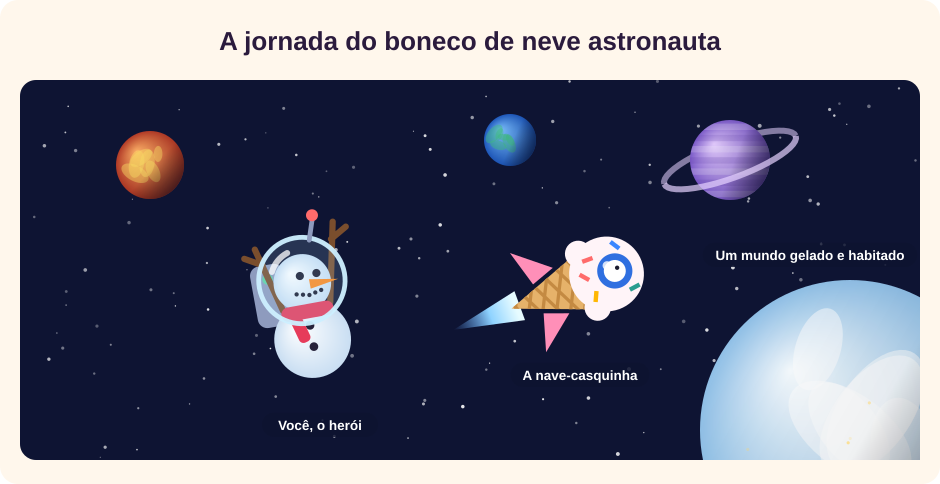
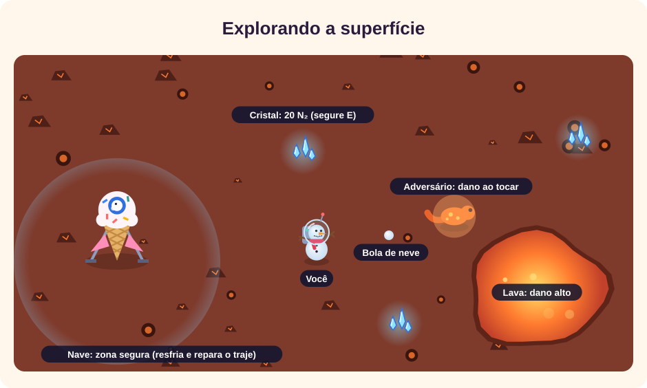
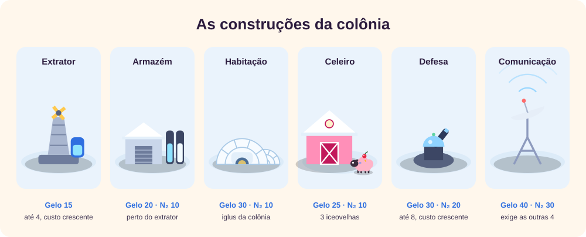
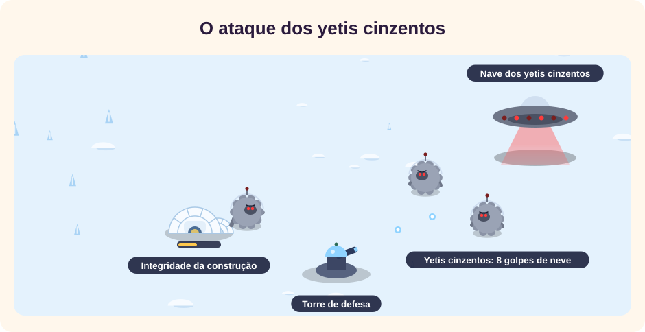
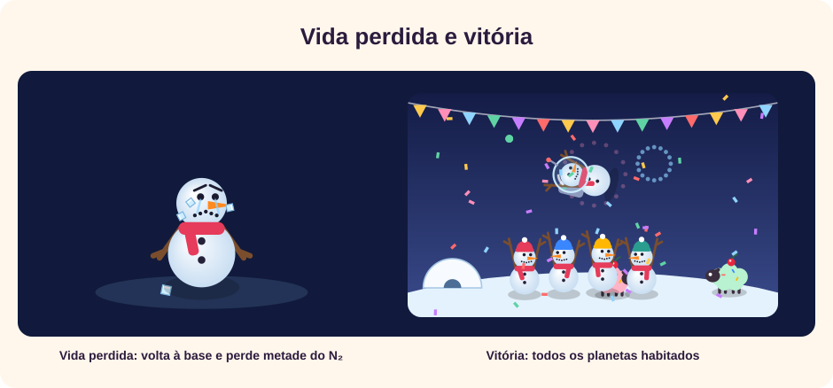
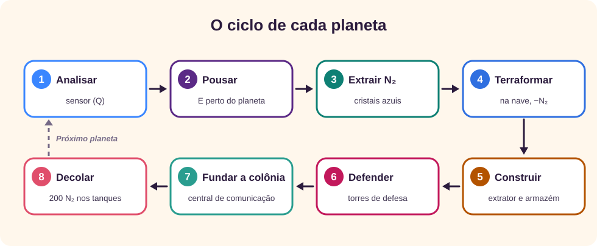
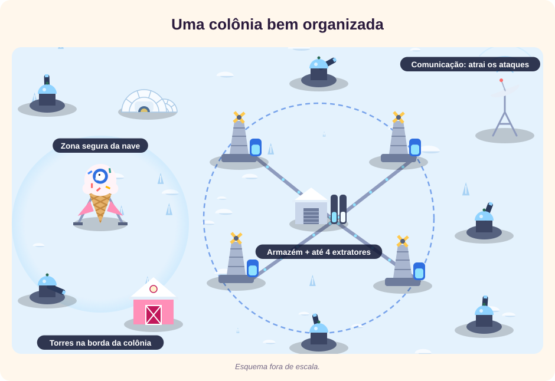

O jogo
My Little Ice World é um jogo de exploração e construção em que você controla um boneco de neve astronauta. A missão é viajar por três sistemas estelares, transformar cada planeta num mundo gelado e fundar nele uma colônia da sua espécie. O jogo termina, com vitória, quando todos os planetas estão habitados. [1]

A lore
No planeta Floco vivia uma civilização de bonecos de neve. Eles moravam em iglus, criavam iceovelhas, animais parecidos com ovelhas que, em vez de lã, têm o corpo coberto de sorvete, e se alimentavam desse sorvete em longas noites de aurora.
Um dia, a estrela de Floco começou a esquentar. Ano após ano, o Grande Degelo derreteu cidades inteiras. Para salvar a espécie, os bonecos de neve construíram naves em forma de casquinha de sorvete e partiram em busca de um novo lar.
Você é um desses astronautas. Durante a viagem, sua nave se perdeu da frota e chegou a uma região com três sistemas estelares, Nix, Boreas e Aurora, cheia de planetas vulcânicos, desertos, oceanos, florestas e gigantes de gás. Nenhum deles é frio o bastante para a sua espécie. Ainda.
A nave carrega um terraformador: alimentado com nitrogênio líquido, que ferve a −196 °C, ele congela um planeta inteiro. [2] [3] O nitrogênio vem do próprio planeta, em cristais azuis espalhados pelo chão. Depois de congelar o mundo, você constrói a infraestrutura, cria iceovelhas e liga a central de comunicação, que chama a frota para o novo lar.
Mas há quem não goste de colônias novas: os yetis cinzentos, invasores que vagam entre as estrelas, pousam para destruir tudo o que você construiu.
Começando uma partida
Na tela inicial você escolhe três coisas antes de clicar em Novo jogo: o idioma, o tamanho da galáxia e a quantidade de recursos. O tamanho define quantos planetas existem em cada sistema:
| Tamanho | Nix | Boreas | Aurora | Total |
|---|---|---|---|---|
| Curta | 2 | 2 | 2 | 6 planetas |
| Normal | 3 | 4 | 5 | 12 planetas |
| Longa | 5 | 7 | 9 | 21 planetas |
A quantidade de recursos muda quanto nitrogênio há nos cristais, quantos blocos de gelo aparecem depois da terraformação e a velocidade dos extratores:
| Recursos | N₂ nos cristais | Blocos de gelo | Extratores |
|---|---|---|---|
| Abundante | 2,6× o necessário | 26 | 160% |
| Cheio | 2× | 20 | 130% |
| Suficiente | 1,5× | 16 | 100% |
| Escasso | 1,2× | 11 | 75% |
| Raro | 1,05× | 8 | 55% |
“O necessário” é o N₂ para terraformar o planeta somado aos 200 N₂ da decolagem. Mesmo no nível Raro, há sempre nitrogênio suficiente, e os cristais extraídos voltam a crescer depois de cerca de 2,5 minutos. O primeiro planeta do sistema Nix é sempre gelado, o mais fácil de todos.
Controles
No computador o jogo usa o teclado e o mouse. No celular aparecem um joystick à esquerda e dois botões à direita.
| Ação | Teclado e mouse | Celular |
|---|---|---|
| Voar e andar | WASD ou setas | Joystick |
| Pousar, decolar, terraformar, comer sorvete, retirar do armazém | E ou Enter | Botão Ação |
| Extrair N₂ e coletar gelo | Segure E | Segure Ação |
| Sensor (no espaço) | Q ou Espaço | Botão Sensor |
| Bola de neve (na superfície) | Espaço ou clique | Botão Neve |
| Construir | B | Botão Construir |
| Mapa estelar | M | Botão Mapa |
| Mapa do planeta | N | Toque no mini-mapa |
| Pausa | Esc ou P | Botão Pausa |
Com Espaço, a bola de neve mira sozinha no adversário mais próximo; com o clique, ela vai para onde você apontar.
O painel
O painel do canto superior esquerdo mostra o essencial; os botões ficam no canto direito.
- Local
- O sistema em que você está ou, na superfície, o planeta, o seu tipo e a temperatura.
- N₂ e Gelo
- Os recursos que você carrega. O N₂ serve para terraformar, construir e decolar; o gelo, para construir.
- Habitados
- Quantos planetas já são colônias, do total da galáxia.
- Vidas
- Cinco corações. O último pisca quando só resta uma vida.
- Relógio
- O tempo de jogo, que só corre enquanto você joga.
- Frio e Traje
- Na superfície: o frio cai com o calor do planeta; quando acaba, o traje começa a se danificar.
- Objetivo
- O que fazer agora. No espaço, perto de um planeta analisado, mostra o tipo, a ameaça e o N₂ necessário.
- Mini-mapa
- No espaço, o mapa do sistema; na superfície, o mapa do planeta, com as áreas já exploradas.
- Setas na borda
- A rosa aponta para a nave, com a distância; a vermelha, que pisca, aponta para um ataque fora da tela.
Viajando pelo espaço
No espaço você pilota a nave entre os planetas, que giram lentamente em volta da estrela. A nave acelera na direção em que você aponta e desacelera sozinha quando você solta os comandos.
- Sensor: com Q, um anel azul se expande e analisa os planetas a até 700 unidades da nave. Ele recarrega em 2 segundos. Planetas não analisados aparecem com um “?”; os analisados mostram nome, tipo e temperatura.
- Pouso: perto de um planeta analisado, um círculo tracejado amarelo aparece e o painel mostra a ameaça e o N₂ necessário. Aperte E para pousar. Pousar não gasta nada.
- Perigos: a estrela empurra e sacode a nave se você chegar perto demais. Nos sistemas Boreas e Aurora há cinturões de asteroides que fazem a nave quicar.
- Mapa estelar: com M, você vê os três sistemas, os planetas de cada um e quantos já estão habitados, e pode viajar para outro sistema. A viagem só pode ser feita a partir do espaço.
Os planetas
Cada planeta tem um tipo e uma temperatura. Quanto mais quente o planeta, mais nitrogênio ele exige para congelar:
N₂ para terraformar = 30 + 0,3 × (temperatura em °C + 150)
(arredondado de 5 em 5, no mínimo 30)
A órbita também conta: a mais próxima da estrela é 18 °C mais quente que a faixa do tipo, e cada órbita seguinte esfria 6 °C. Um planeta gelado na órbita externa exige só 30 N₂; um vulcânico perto da estrela pode passar de 220.
| Tipo | Perigo do terreno | Criatura | Perda de frio |
|---|---|---|---|
| Gelado | Nenhum | Yeti, que só reage se for atacado | Nenhuma |
| Cheio de vida | Plantas carnívoras que cospem esporos | Besouros | Lenta |
| Vulcânico | Lagos de lava | Salamandras | Muito rápida |
| Desértico | Areia movediça e tempestades de areia | Escorpiões | Rápida |
| Gasoso | Nuvens de gás tóxico que se movem | Medusas de gás | Moderada |
| Oceânico | Água funda, onde você anda devagar | Enguias, que vivem na água | Lenta |
Explorando a superfície
Depois do pouso, você sai da nave com o traje e explora o planeta a pé. O objetivo da primeira etapa é juntar nitrogênio líquido.

- Cristais de N₂: segure E perto de um cristal por cerca de um segundo para extrair 20 N₂. Os cristais extraídos voltam a crescer depois de cerca de 2,5 minutos.
- Frio e traje: o calor do planeta consome a barra de frio; num vulcânico ela dura cerca de 40 segundos. Quando o frio acaba, o traje perde 6 pontos por segundo. Perto da nave, na zona clara, o frio e o traje se recuperam rapidamente.
- Perigos: a lava tira 28 pontos de traje por segundo; o gás tóxico, 12; os esporos e o toque das criaturas, 9 e 12 por vez. A água e a areia deixam você mais lento, e a tempestade de areia empurra e esquenta ainda mais.
- Criaturas: elas não entram na zona da nave. Bolas de neve as afastam e as derrotam; cada criatura derrotada dá +2 N₂. Enquanto não houver uma central de defesa, novas criaturas aparecem de tempos em tempos.
- Mini-mapa: começa escuro e se revela num raio ao seu redor enquanto você anda. Ele mostra os perigos, os cristais encontrados, as construções, a nave e as criaturas próximas. O rodapé mostra a porcentagem explorada e quantos cristais você já encontrou. A tecla N o amplia. [4]
Terraformação
Quando você tiver o N₂ necessário, volte à nave e aperte E. Uma onda de gelo sai da nave e congela o planeta inteiro em três segundos.
- O chão vira neve, a lava e a água viram pisos de gelo, onde você anda mais rápido, e o gás tóxico, as tempestades e as plantas carnívoras deixam de ser perigosos.
- Metade das criaturas foge (no planeta gelado, os yetis ficam).
- Seu frio passa a se recuperar em qualquer lugar.
- Aparecem blocos de gelo: segure E para coletar 8 de gelo de cada um. Com o gelo começa a etapa de construção.
As construções
Num planeta terraformado, a tecla B abre o menu de infraestrutura. Cada construção é erguida perto de você, num espaço livre.

| Construção | Custo | Limite | Função |
|---|---|---|---|
| Extrator | 15 de gelo | 4, cada um +10 de gelo e +10 N₂ | Produz 1,5 de gelo e 1 N₂ por segundo, só para um armazém ao alcance |
| Armazém | 20 de gelo, 10 N₂ | 1 | Guarda a produção dos extratores a até cerca de 260 unidades, mesmo com você longe; capacidade de 150 N₂ e 220 de gelo |
| Habitação | 30 de gelo, 10 N₂ | 1 | Iglus onde a colônia vai morar |
| Celeiro | 25 de gelo, 10 N₂ | 1 | Cria três iceovelhas |
| Central de defesa | 30 de gelo, 20 N₂ | 8, cada uma +10 de gelo e +10 N₂ | Torre que atira nos adversários a até 470 unidades |
| Central de comunicação | 40 de gelo, 30 N₂ | 1 | Chama a sua espécie; exige extrator, habitação, celeiro e defesa |
- Extratores e armazém: o extrator só entrega a produção ao armazém. Sem um armazém ao alcance, ele fica parado, com a etiqueta “Sem armazém ao alcance”. Para retirar os recursos, vá até o armazém e aperte E. Quando o armazém enche, a produção para até você retirar.
- Iceovelhas: perto de uma iceovelha, aperte E para comer o seu sorvete: o frio e o traje voltam ao máximo. O sorvete cresce de novo em 20 segundos.
- Defesa: cada torre dispara a cada 0,7 segundo e tem 160 de integridade; as outras construções têm 100. Com ao menos uma torre, as criaturas do planeta deixam de reaparecer.
A colônia e a decolagem
Quando a central de comunicação fica pronta, ela começa a chamar a sua espécie. Em poucos segundos, quatro naves pousam e oito colonos de gorro saem andando entre as construções: a colônia está fundada, e o contador de planetas habitados sobe.
Para seguir viagem, volte à nave e decole. Toda decolagem consome 200 N₂ dos tanques. Se faltar nitrogênio, a mensagem mostra quanto falta e o objetivo pede para juntar o restante. Os cristais de cada planeta já contam com esse combustível.
Os yetis cinzentos
Depois que a central de comunicação existe, a colônia chama a atenção dos yetis cinzentos. Enquanto você estiver nesse planeta, uma nave deles pousa entre 45 e 65 segundos após a fundação e, depois, a cada 70 a 110 segundos.

- Cada ataque traz de 3 a 8 invasores: 3 mais 1 a cada duas colônias que você já fundou.
- Os yetis cinzentos vão até a construção mais próxima e a golpeiam; se você chegar perto, atacam você. Eles aguentam 8 bolas de neve; o tiro da torre vale por dois.
- Construções danificadas mostram uma barra de integridade. Se ela zerar, a construção é destruída e precisa ser refeita. Quando o ataque termina, as construções se reparam aos poucos.
- Se a central de comunicação for destruída, a colônia continua fundada, mas os ataques param até você reconstruí-la.
Vidas, derrota e vitória
O herói tem cinco vidas. Quando o traje chega a zero, ele perde uma vida e metade do N₂ e é levado de volta à base, perto da nave. Uma tela mostra o herói chorando cubos de gelo, até você apertar Voltar para a base.

Na quinta vida perdida, aparece a mensagem de derrota, o jogo salvo é apagado e o menu principal volta sozinho. Ao habitar o último planeta, a festa da vitória mostra o tempo total no relógio, as bolas de neve lançadas, as iceovelhas criadas e as vidas restantes.
Estratégias
Cada planeta passa pelo mesmo ciclo. Dominar a ordem das etapas é a base de todas as estratégias:

Comece pelo frio
Planetas gelados pedem só de 30 a 55 N₂ e têm yetis pacíficos. O N₂ que sobra vai com você para o próximo planeta.
Leia a temperatura antes de pousar
O sensor mostra a temperatura e o N₂ de cada planeta. Órbitas externas são mais frias e mais baratas que as internas do mesmo tipo.
Conte o combustível
Antes de sair de um planeta você precisa do N₂ da terraformação mais 200 para decolar. Guarde os 200 depois de construir.
Explore em pétalas
Em planetas quentes, saia, colete e volte à nave antes de o frio acabar. Num vulcânico, a barra cheia dura uns 40 segundos.
Terraforme logo
Perder uma vida custa metade do N₂. Assim que juntar o necessário, terraforme, em vez de carregar nitrogênio pelo mapa.
Extrator e armazém primeiro
Juntos custam 35 de gelo e 10 N₂, pagos com os primeiros blocos de gelo. A partir daí a colônia produz sozinha.
Quatro extratores, um armazém
Construa os extratores dentro do alcance do armazém. Com quatro, ele enche em cerca de 40 segundos: retire com frequência.
Torres antes da comunicação
Os ataques começam depois da central de comunicação. Erga três ou quatro torres em volta da colônia antes de construí-la.
Funde e parta
Os ataques só acontecem com você no planeta, e ficam maiores a cada colônia. Depois da fundação, junte os 200 N₂ e decole.
Use a iceovelha como posto de cura
O celeiro perto da área de trabalho economiza viagens à nave: um sorvete restaura todo o frio e o traje.
Leve os invasores até as torres
Yetis cinzentos atacam quem chega perto. Atraia-os para o alcance das torres em vez de lutar sozinho.
Escolha o desafio
Para a primeira partida, Normal com recursos Cheios. Para um desafio, Longa com Raros. Para bater o relógio, Curta com Abundantes.

Em resumo
- Analise, pouse, junte N₂, terraforme, construa, defenda, funde a colônia e decole com 200 N₂.
- Quanto mais quente o planeta, mais N₂: comece pelos frios.
- Extratores só entregam ao armazém; retire os recursos lá.
- Torres antes da central de comunicação; depois, parta logo.
Revisão rápida
Tente responder antes de abrir cada pergunta.
1. Por que dois planetas do mesmo tipo podem exigir quantidades diferentes de N₂?
Porque o N₂ depende da temperatura, e a temperatura muda com a órbita: quanto mais perto da estrela, mais quente e mais caro.
2. Quanto N₂ a nave consome para decolar?
200 N₂, em toda decolagem. Pousar não custa nada.
3. Um extrator mostra “Sem armazém ao alcance”. O que fazer?
Construir um armazém a até cerca de 260 unidades dele. O extrator só entrega a produção ao armazém.
4. Quando começam os ataques dos yetis cinzentos?
Depois que a central de comunicação existe, entre 45 e 65 segundos após a fundação, e só enquanto você está no planeta.
5. O que acontece quando o traje chega a zero?
Você perde uma vida e metade do N₂ e volta à base. Na quinta vez, o jogo termina em derrota.
6. Qual é o máximo de extratores e de torres de defesa por planeta?
Quatro extratores e oito centrais de defesa, cada nova unidade um pouco mais cara.
Referências
- Giovani Perotto Mesquita, “My Little Ice World”, jogo interativo, giovanipm.github.io/MyLittleIceWorld.html.
- Wikipedia (em inglês), “Terraforming”, acesso em 17/10/2026, en.wikipedia.org/wiki/Terraforming.
- Wikipedia (em inglês), “Liquid nitrogen”, acesso em 17/10/2026, en.wikipedia.org/wiki/Liquid_nitrogen.
- Wikipedia (em inglês), “Fog of war”, acesso em 17/10/2026, en.wikipedia.org/wiki/Fog_of_war.
- Gliffy, “canvas2svg”, biblioteca de código aberto usada para converter os desenhos do jogo nas imagens deste tutorial, github.com/gliffy/canvas2svg.